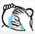

本節の紹介：
本節では元々、Gallery(ギャラリー)というコントロールを紹介するつもりでしたが、やっぱりやめました。Android 4.1以降で非推奨になったからです。互換ライブラリを使ってGalleryを使うこともできますが、それもやはりやめました。Galleryは画像を切り替えるたびにビューを再作成する必要があり、これでは確実に大きなリソースの無駄が発生するからです！Galleryの効果は他の方法でも実現できます。例えば、HorizontalScrollViewを使って水平スクロール効果を実現するか、水平方向のListViewを作成してもよいでしょう。興味があれば自分でGoogle検索してみてください！
本節では、SpinnerというAdapterコントロールについて学びます！ 適用シーン：アプリでユーザーにデータを入力させる必要がある場合、ユーザーに直接タイピングさせる以外にも、もう1つ思いやりのある設計があります。それは、一連のオプションをリストアップしてユーザーに選択させることで、ユーザーの利便性を高めるというものです！ 前置きはこれくらいにして、Spinnerの基本的な使い方を学び始めましょう~
1. 関連属性
- android:dropDownHorizontalOffset：リストボックスの水平オフセット距離を設定します
- android:dropDownVerticalOffset：リストボックスの水平・垂直距離を設定します
- android:dropDownSelector：リストボックスが選択されたときの背景
- android:dropDownWidth：ドロップダウンリストボックスの幅を設定します
- android:gravity：内部コンポーネントの整列方法を設定します
- android:popupBackground：リストボックスの背景を設定します
- android:prompt：ダイアログモードのリストボックスのプロンプト情報(タイトル)を設定します。string.xml内のリソースIDのみを参照でき、文字列を直接書くことはできません
- android:spinnerMode：リストボックスのモード、2つの選択可能な値があります：dialog：ダイアログスタイルのウィンドウdropdown：ドロップダウンメニュースタイルのウィンドウ(デフォルト)
- 任意属性：android:entries：配列リソースを使用して、ドロップダウンリストボックスのリスト項目を設定します
2. 使用例：
ちなみに、Spinnerはデフォルトで最初の値を選択します。つまり、デフォルトでspinner.setSection(0)が呼び出されます。これでデフォルトの選択値を設定できます。また、OnItemSelectedListenerイベントが1回トリガーされます。今のところ解決策は見つかっていないため、次に示すのは妥協案です。boolean値を追加してfalseに設定し、onItemSelectedで判定します。falseの場合はデフォルトでトリガーされたものなので何もせず、boolean値をtrueに設定します。trueの場合は通常どおりイベントをトリガーします！ この例では、データソースやリストボックスのスタイルなどを比較するために、2つの異なるSpinnerを作成しています。 それでは見てみましょう。
効果図：

コード実装：
ここでは引き続き、前述の再利用可能なBaseAdapterを使用しています：
最初のSpinnerのデータソースを記述します：
在res/values下に1つ記述します：myarrays.xmlというファイルで、内容は以下の通りです：
<?xml version="1.0" encoding="utf-8"?>
<resources>
<string-array name="data">
<item>英勇青铜</item>
<item>不屈白银</item>
<item>荣耀黄金</item>
<item>华贵铂金</item>
<item>璀璨钻石</item>
<item>超凡大师</item>
<item>最强王者</item>
</string-array>
</resources>
次に、2つ目のSpinnerのレイアウトです：item_spin_hero.xml：
<?xml version="1.0" encoding="utf-8"?>
<LinearLayout xmlns:android="http://schemas.android.com/apk/res/android"
android:layout_width="match_parent"
android:layout_height="match_parent"
android:orientation="horizontal"
android:padding="5dp">
<ImageView
android:id="@+id/img_icon"
android:layout_width="48dp"
android:layout_height="48dp"
android:src="@mipmap/iv_lol_icon1.html" />
<TextView
android:id="@+id/txt_name"
android:layout_width="wrap_content"
android:layout_height="wrap_content"
android:layout_marginLeft="10dp"
android:layout_marginTop="15dp"
android:text="德玛西亚"
android:textSize="16sp" />
</LinearLayout>
さらに、Entitiyエンティティクラスを記述します：Hero.java：
/**
* Created by Jay on 2015/9/24 0024.
*/
public class Hero {
private int hIcon;
private String hName;
public Hero() {
}
public Hero(int hIcon, String hName) {
this.hIcon = hIcon;
this.hName = hName;
}
public int gethIcon() {
return hIcon;
}
public String gethName() {
return hName;
}
public void sethIcon(int hIcon) {
this.hIcon = hIcon;
}
public void sethName(String hName) {
this.hName = hName;
}
}
最後に、MainActivityのレイアウトとJavaコードの部分です：
レイアウトファイル：activity_main.xml：
<LinearLayout xmlns:android="http://schemas.android.com/apk/res/android"
xmlns:tools="http://schemas.android.com/tools"
android:layout_width="match_parent"
android:layout_height="match_parent"
android:orientation="vertical"
android:padding="5dp"
tools:context=".MainActivity">
<TextView
android:layout_width="wrap_content"
android:layout_height="wrap_content"
android:text="选择您的排位分段"
android:textColor="#44BDED"
android:textSize="18sp" />
<Spinner
android:id="@+id/spin_one"
android:layout_width="100dp"
android:layout_height="64dp"
android:entries="@array/data"
android:prompt="@string/spin_title"
android:spinnerMode="dialog" />
<TextView
android:layout_width="wrap_content"
android:layout_height="wrap_content"
android:layout_marginTop="10dp"
android:text="选择你的拿手英雄~"
android:textColor="#F5684A"
android:textSize="18sp" />
<Spinner
android:id="@+id/spin_two"
android:layout_width="wrap_content"
android:layout_height="64dp" />
</LinearLayout>
MainActivity.java：
public class MainActivity extends AppCompatActivity implements AdapterView.OnItemSelectedListener {
private Spinner spin_one;
private Spinner spin_two;
private Context mContext;
//判断是否为刚进去时触发onItemSelected的标志
private boolean one_selected = false;
private boolean two_selected = false;
private ArrayList<Hero> mData = null;
private BaseAdapter myAdadpter = null;
@Override
protected void onCreate(Bundle savedInstanceState) {
super.onCreate(savedInstanceState);
setContentView(R.layout.activity_main);
mContext = MainActivity.this;
mData = new ArrayList<Hero>();
bindViews();
}
private void bindViews() {
spin_one = (Spinner) findViewById(R.id.spin_one);
spin_two = (Spinner) findViewById(R.id.spin_two);
mData.add(new Hero(R.mipmap.iv_lol_icon1,"迅捷斥候：提莫（Teemo）"));
mData.add(new Hero(R.mipmap.iv_lol_icon2,"诺克萨斯之手：德莱厄斯（Darius）"));
mData.add(new Hero(R.mipmap.iv_lol_icon3,"无极剑圣：易（Yi）"));
mData.add(new Hero(R.mipmap.iv_lol_icon4,"德莱厄斯：德莱文（Draven）"));
mData.add(new Hero(R.mipmap.iv_lol_icon5,"德邦总管：赵信（XinZhao）"));
mData.add(new Hero(R.mipmap.iv_lol_icon6,"狂战士：奥拉夫（Olaf）"));
myAdadpter = new MyAdapter<Hero>(mData,R.layout.item_spin_hero) {
@Override
public void bindView(ViewHolder holder, Hero obj) {
holder.setImageResource(R.id.img_icon,obj.gethIcon());
holder.setText(R.id.txt_name, obj.gethName());
}
};
spin_two.setAdapter(myAdadpter);
spin_one.setOnItemSelectedListener(this);
spin_two.setOnItemSelectedListener(this);
}
@Override
public void onItemSelected(AdapterView<?> parent, View view, int position, long id) {
switch (parent.getId()){
case R.id.spin_one:
if(one_selected){
Toast.makeText(mContext,"您的分段是~：" + parent.getItemAtPosition(position).toString(),
Toast.LENGTH_SHORT).show();
}else one_selected = true;
break;
case R.id.spin_two:
if(two_selected){
TextView txt_name = (TextView) view.findViewById(R.id.txt_name);
Toast.makeText(mContext,"您选择的英雄是~：" + txt_name.getText().toString(),
Toast.LENGTH_SHORT).show();
}else two_selected = true;
break;
}
}
@Override
public void onNothingSelected(AdapterView<?> parent) {
}
}
また、SpinnerのOnItemSelectedListenerや、選択された項目の値を取得する方法については、上記のコードを自分で確認してくださいね~
3. サンプルコードのダウンロード：
本節のまとめ
さて、本節ではSpinner(ドロップダウン選択ボックス)の使い方を紹介しました。例はなかなか面白いですよ、はは~！ 私にどのサーバーでどのランクかは聞かないでください。私は対COM戦のプリンスです。残念ながら、ずっとブロンズ帯で必死に足掻いています~ その理由は分かるでしょう

、では、本節はここまでです~
クリックしてノートを共有
ノートは本記事の内容を拡張したものである必要があります！
記事の投稿は、こちらをクリック
登録招待コードの取得方法
ノートを共有する前に必ずログインしてください！
登録招待コードの取得方法